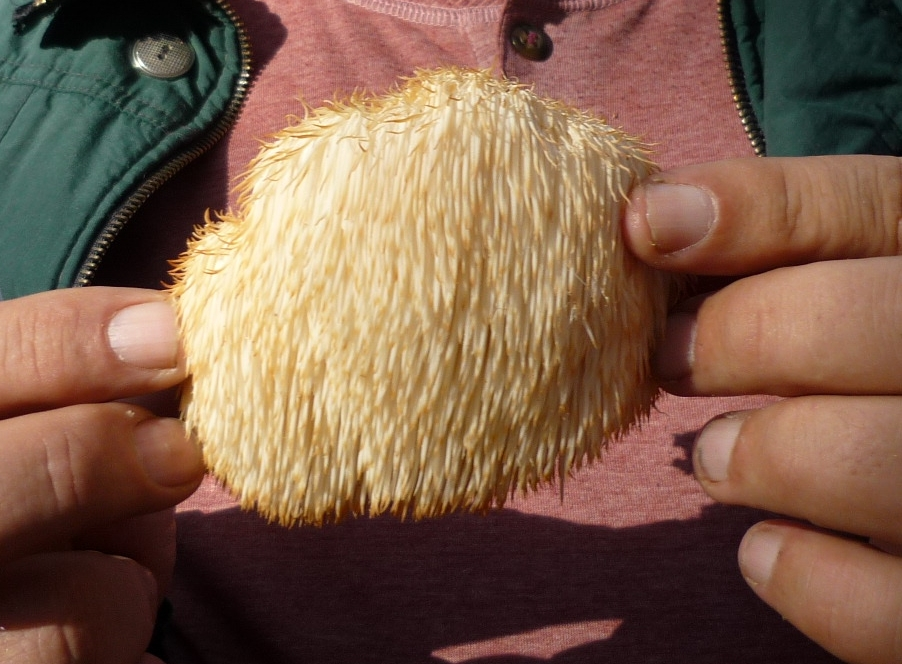

Culinary Use
Hericium erinaceus produces edible fruiting bodies that have uses as food and in traditional medicine. Some guides consider it inedible. Hericium erinaceus is common in gourmet cooking. Young specimens are considered the best. Alongside shiitake (Lentinus edodes) and oyster (Pleurotus ostreatus) mushrooms, H. erinaceus is used as a specialty mushroom. Its flavor may be compared to that of lobster.The production of specialty mushrooms in the USA increased by about 23% between 2010 and 2018 from 16 to 20 million lbs (7–9 million kg). This increasing consumer interest in specialty mushrooms has encouraged the improvement of shiitake strains.
Hericium erinaceus fruiting bodies contain 57% carbohydrates (8% as dietary fiber), 4% fat, and 22% protein.
Phytochemicals
Hericium erinaceus contains diverse phytochemicals, including polysaccharides, such as β-glucan, as well as hericenones and erinacines. From its essential oil, 77 aroma and flavor compounds were identified, including hexadecanoic acid (26% of total oil composition), linoleic acid (13%), phenylacetaldehyde (9%) and benzaldehyde (3%), and other oils, such as 2-methyl-3-furanthiol, 2-ethylpyrazine and 2,6-diethylpyrazine. Low concentrations of ergosterol are present.
Hericium erinaceus has been used in traditional Chinese medicine.
